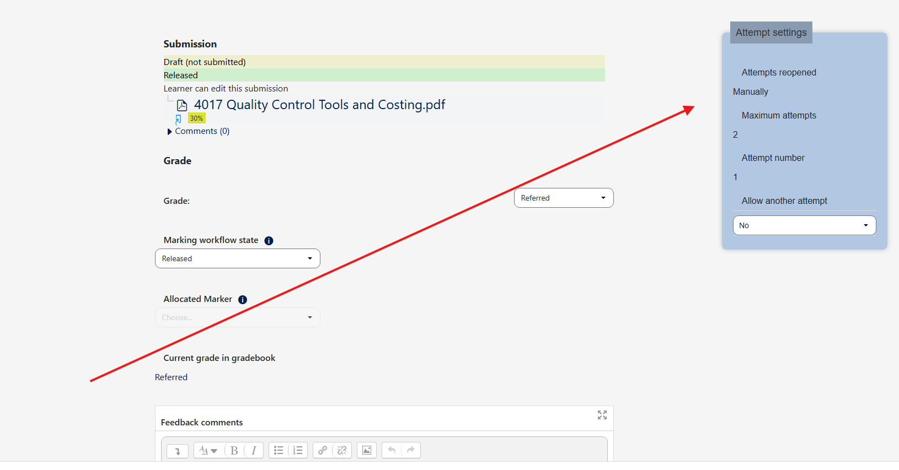
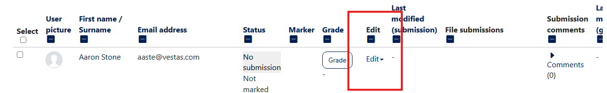

What do you need to do?
Requesting a Resubmission After Grading
Follow these steps when a student's work needs to be resubmitted for academic improvement. All actions are in the right-hand grading panel.
Before You Begin: Check the Attempt Number
First, look at the **Attempt settings** in the right-hand panel to see if this is the first submission or a resubmission.

Reverting a Submission to Draft
Use this process for technical or formatting issues. This is done from the main grading overview page, not the individual student view.
Step 1 of 3: Open the Edit Menu
From the assignment's submission list, find the student and click the **Edit** dropdown menu in their row.
